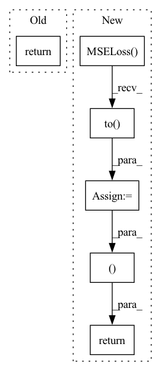

Pattern ID :23449

Before Change
criterion = nn.MSELoss().to(config.device)
return criterion
def define_optimizer(model) -> optim.Adam:
After Change
psnr_criterion = nn.MSELoss().to(config.device)
pixel_criterion = nn.MSELoss().to(config.device)
return psnr_criterion, pixel_criterion
def define_optimizer(model) -> optim.Adam:
In pattern: SUPERPATTERN
Frequency: 4
Non-data size: 6
Instances
Fragment ID: 73581248
Project Name: lornatang/srgan-pytorch
Commit Name: 94c30bf1b3c49db529a85b0f627ad0997d3b9aab
Time: 2021-12-29
Author: liuchangyu1111@gmail.com
File Name: train_srresnet.py
M Class Name: AnonimousClass
N Class Name: AnonimousClass
M Method Name: define_loss(0)
N Method Name: define_loss(0)
M Parent Class:
N Parent Class:
M File Name: train_srresnet.py
N File Name: train_srresnet.py
M Start Line: 131
M End Line: 133
N Start Line: 131
N End Line: 134
'>
Before Change
def define_loss() -> nn.MSELoss:
criterion = nn.MSELoss().to(config.device)
return criterion
def define_optimizer(model) -> optim:
After Change
def define_loss() -> [nn.MSELoss, nn.MSELoss]:
psnr_criterion = nn.MSELoss().to(config.device)
pixel_criterion = nn.MSELoss().to(config.device)
return psnr_criterion, pixel_criterion
def define_optimizer(model) -> optim:
if config.model_optimizer_name == "sgd":
'>
Fragment ID: 73581249
Project Name: lornatang/srcnn-pytorch
Commit Name: 35f9257f6155cd6edf7bdd17b18919a3f76fced6
Time: 2022-01-12
Author: liuchangyu1111@gmail.com
File Name: train.py
M Class Name: AnonimousClass
N Class Name: AnonimousClass
M Method Name: define_loss(0)
N Method Name: define_loss(0)
M Parent Class:
N Parent Class:
M File Name: train.py
N File Name: train.py
M Start Line: 111
M End Line: 113
N Start Line: 111
N End Line: 114
'>
Before Change
def define_loss() -> nn.MSELoss:
criterion = nn.MSELoss().to(config.device)
return criterion
def define_optimizer(model) -> optim:
After Change
def define_loss() -> [nn.MSELoss, nn.MSELoss]:
psnr_criterion = nn.MSELoss().to(config.device)
pixel_criterion = nn.MSELoss().to(config.device)
return psnr_criterion, pixel_criterion
def define_optimizer(model) -> optim.SGD:
optimizer = optim.SGD(model.parameters(),
'>
Fragment ID: 73581246
Project Name: lornatang/vdsr-pytorch
Commit Name: 468dd2557115b290f848f89edb09926fa2cedf58
Time: 2022-02-10
Author: liuchangyu1111@gmail.com
File Name: train.py
M Class Name: AnonimousClass
N Class Name: AnonimousClass
M Method Name: define_loss(0)
N Method Name: define_loss(0)
M Parent Class:
N Parent Class:
M File Name: train.py
N File Name: train.py
M Start Line: 118
M End Line: 120
N Start Line: 119
N End Line: 122
'>
Before Change
content_criterion = ContentLoss().to(config.device)
adversarial_criterion = nn.BCEWithLogitsLoss().to(config.device)
return psnr_criterion, content_criterion, adversarial_criterion
def define_optimizer(discriminator: nn.Module, generator: nn.Module) -> [optim.Adam, optim.Adam]:
After Change
psnr_criterion = nn.MSELoss().to(config.device)
pixel_criterion = nn.MSELoss().to(config.device)
content_criterion = ContentLoss().to(config.device)
adversarial_criterion = nn.BCEWithLogitsLoss().to(config.device)
return psnr_criterion, pixel_criterion, content_criterion, adversarial_criterion
def define_optimizer(discriminator: nn.Module, generator: nn.Module) -> [optim.Adam, optim.Adam]:
'>
Fragment ID: 73581247
Project Name: lornatang/srgan-pytorch
Commit Name: 2d243ee5a59770c229d6f18defcdf166ad5416fc
Time: 2021-12-21
Author: liuchangyu1111@gmail.com
File Name: train_srgan.py
M Class Name: AnonimousClass
N Class Name: AnonimousClass
M Method Name: define_loss(0)
N Method Name: define_loss(0)
M Parent Class:
N Parent Class:
M File Name: train_srgan.py
N File Name: train_srgan.py
M Start Line: 145
M End Line: 149
N Start Line: 146
N End Line: 151